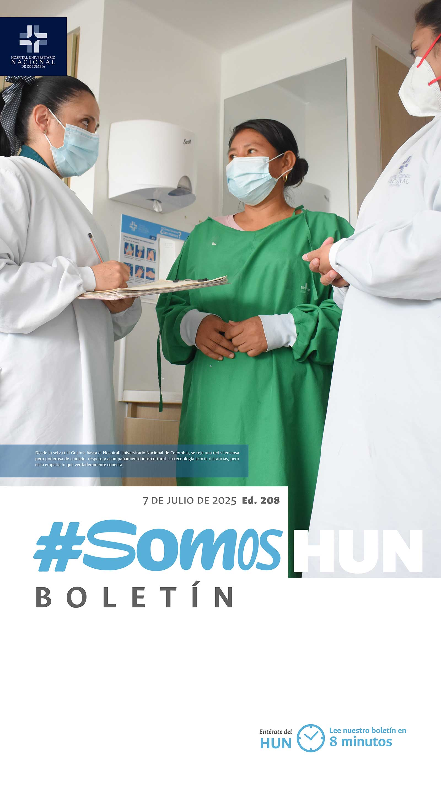
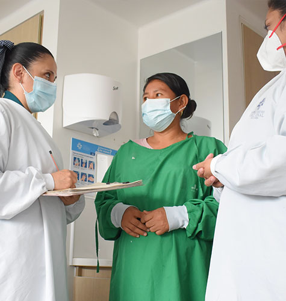
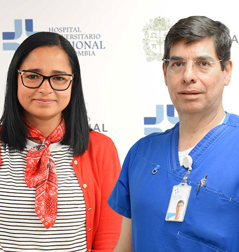
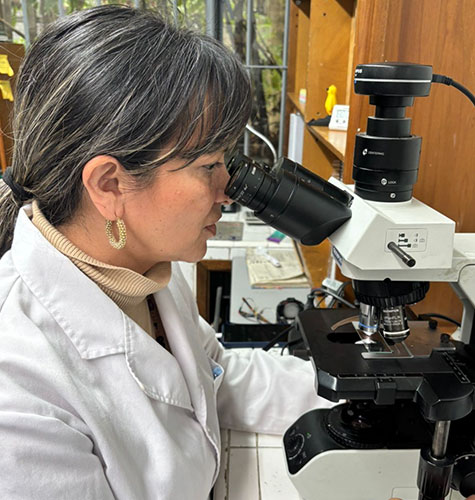
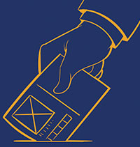
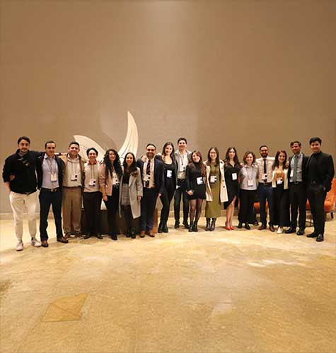
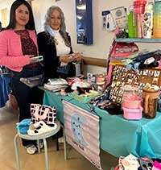

Ver todos los boletines
Puentes que sanan: comunicación intercultural y atención en salud a comunidades indígenas en Colombia
Desde la selva del Guainía hasta el Hospital Universitario Nacional de Colombia, se teje una red silenciosa pero poderosa de cuidado, respeto y acompañamiento intercultural. La tecnología acorta distancias, pero es la empatía lo que verdaderamente conecta.Leer más

LANZAMIENTO ECBE Endocarditis Infecciosa
Hoy se publicó el Estándar Clínico Basado en la Evidencia de prevención, diagnóstico, tratamiento y rehabilitación del paciente adulto con endocarditis infecciosa en el Hospital Universitario Nacional de Colombia.Leer más
Myriam Johana Ortiz disfrutó su viaje hacia la acreditación
Como parte del cierre de la III Feria de la Acreditación y en el marco de la conmemoración del IX Aniversario del Hospital Universitario Nacional, se llevó a cabo el esperado sorteo del gran premio: un viaje para dos personas, todo incluido, a la ciudad de Cartagena de Indias.Leer más

Chagas: una zoonosis enredada en las dinámicas del ecosistema Colombiano
Silenciosa, crónica y altamente subdiagnosticada, esta zoonosis causada por el parásito Trypanosoma cruzi afecta a cientos de personas en el país, sin que muchas de ellas siquiera lo sospechen. Por décadas, ha habitado en las sombras de los sistemas de salud y ecosistemas de América debido a su complejidad biológica, los múltiples modos de transmisión y la estrecha relación entre fauna silvestre y entornos humanos, se hace un enemigo difícil de detectar y aún más difícil de contener.Leer más

Resultados elección miembros del COPASST
Los representantes de los trabajadores son elegidos por votación interna. Los resultados de las elecciones 2025, fueron las siguientes...
Leer más
Participa en la encuesta para la apertura de una droguería en el HUN
El Hospital Universitario Nacional de Colombia (HUN) está explorando la apertura de una droguería dentro de sus instalaciones. Su opinión es muy importante para conocer si esta iniciativa sería de utilidad para nuestro personal y qué productos o servicios deberían priorizarse.Leer más

Una jornada llena de
conocimientos
IV Simposio de Radiología e Imágenes Diagnósticas
UNAL - HUN
Se llevó a cabo el IV
Simposio de Radiología
e Imágenes Diagnósticas
UNAL - HUN, en el hotel
Cosmos 100, donde estudiantes de
medicina, residentes de distintas
especialidades, profesionales,
técnicos en radiología y médicos
generales aprendieron valiosos
conocimientos para sus actividades
diarias.Leer más

El HUN abre sus puertas al talento emprendedor de su equipo humano
El día jueves 3 y viernes 4 de Julio, el Hospital Universitario Nacional de Colombia, se llenó de creatividad, innovación y espíritu empresarial con la realización de su Feria de emprendimiento, un espacio dedicado a visibilizar y apoyar los proyectos y negocios de sus colaboradores.Leer más